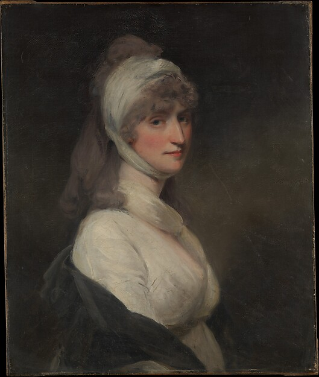

Impact-focused design review: Official IMD logo integration, gallery framing, executive typography, unified 52px buttons, and zero emoticons.
Can you distinguish between authentic human artistic mastery and state-of-the-art algorithmic synthesis?

Total Time: 26.4 seconds